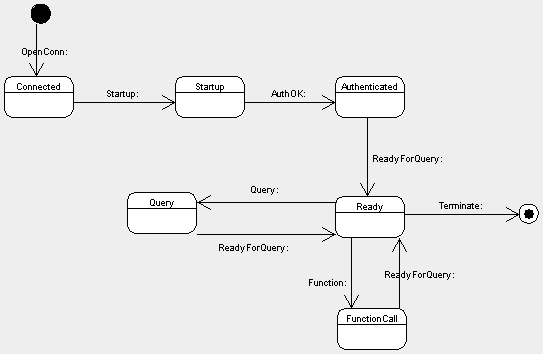

| ← Suggested Readings | Up | Next Topic → |
Last update: 2002-06-12 00:35:00 by usp
Category: Internal documentation
Intended Audience: Npgsql Developers
This document describes the behaviour of the connection object. This is done in form of a state/event/transition table: For each specific state of a connection object all possible events are listed, together with a short description of the reactions, and a state the connection will be in after performing the actions.
The first column type identifies the kind of event. We distinguish between 3 types:
The second column denotes the event. I have chosen the names similar to their corresponding message names, as defined in the PostgreSQL 7.2.1 Documentation, Chapter 4.4, Message Formats. However, with respect to the somewhat limited space, I have shortened them where possible in an unambiguous way. Additionally the full length message names are mentioned in the description parts, in most cases hyperlinked to their definitons.
The third column contains the state the connection will receive after carrying out the actions, described in the fourth column. The state names may be abbreviated, too.
The fourth column contains a general description of the situation an the actions to be taken, often in conjunction with hyperlinks to the corresponding message definitions.
And here comes the description:
| Communication State Table | |||
| Type | Event/Action | Next State | Description |
| Ground Zero | |||
| This state is active right after instantiation of a new connection object. There is no open connection. | |||
| F | OpenConn() | Connected | This method is called to open a communication channel to the backend. The connection parameters are retrieved from the connection string. A successul OpenConn() causes a state transition to Connected, otherwise an errormessage should be displayed. |
| Connected | |||
| In this state the communication with the backend is initiated. A communication channel has already been successfully opened. The frontend may choose an SSL connection by calling SSLReq() instead of Startup() or CancelReq(). | |||
| F | Startup() | Startup | This method call occurs in order to establish a regular unsecure connection to the backend. The frontend send a Startup Packet to the backend. |
| F | CancelReq() | Ground Zero | The Cancel Request Message is sent asynchronously through an unsecure connection. It contains the PID and Secret Key previously obtained in the authentication state of another startup sequence. After processing this message the backend immediately closes the connection. The frontend also closes the connection an makes a transition to Ground Zero. |
| F | SSLRequest() | SSLStartup | To initiate an SSL-encrypted connection, the frontend initially sends an SSLRequest message rather than a StartupPacket or Cancel Request Message. The state will transit to SSLRequest. |
| SSL Startup | |||
| In this state the frontend awaits the SSL Request response from the server. This is a single byte containing 'Y' or 'N', indicating that it is willing or unwilling to perform SSL, respectively.
While the protocol itself does not provide a way for the server to force SSL encryption, the administrator may configure the server to reject unencrypted sessions as a byproduct of authentication checking. |
|||
| M | Y-Response | SSLHandshake | The server indicates that it is willing to accept a SSL connection by transmitting a single byte 'Y'. The frontend will perform an SSL Startup Handshake with the Server. If successful, the Startup Package is sent to the Server, and |
| M | N-Response | Ground Zero | The Server is not willing to accept a SSL connection. Close the connection and return to Ground Zero. |
| M | Error | Ground Zero | This should really not happen in this state. Close the connection and return to Ground Zero. |
| E | Timeout | Ground Zero | In case of a backend response timeout the frontend closes the connection and goes back to Ground Zero. |
| SSL Handshake | |||
| In this state the frontend and backend perform the
SSL startup handshake (not described here, part of the SSL specification). If this is successful, the frontend sends the usual StartupPacket to the backend. In this case the StartupPacket and all subsequent data will be SSL-encrypted.
An initial SSLRequest may also be used in a connection that is being opened to send a CancelRequest message. While the protocol itself does not provide a way for the server to force SSL encryption, the administrator may configure the server to reject unencrypted sessions as a byproduct of authentication checking. |
|||
| M | SSLSuccess | SSLConnected | Send the regular Startup Package to the backend and switch to the SSL Connected State. |
| M | SSLFailed | Ground Zero | Close the current connection and return to Ground Zero. The caller might then choose to open a connection without SSL encryption. |
| M | Error | Ground Zero | This would only occur if the server predates the addition of SSL support to PostgreSQL. The current connection is closed and state is returned to Ground Zero. The caller might then choose to open a connection without SSL encryption. |
| SSL Connected | |||
| This state is entered after successfully establishing a Secure Socket Layer Connection. Communications at this point are already encrypted. This states corresponds to the unsecured Connected state: The Caller may now choose to issue a Startup Package or a Cancel Reques Message. | |||
| F | Startup() | Startup | The frontend sends a regular Startup Package. This will install a regular secured connection to the backend. |
| F | CancelReq() | Ground Zero | The frontend sends a Cancel Request Message. It contains the PID and Secret Key which have been previously received in a different startup sequence. After processing this message the backend will close the connection immediately. So should the frontend do, an then return to Ground Zero. |
| M | Error | Ground Zero | This message should not occur in this state, as the backend is awaiting a message from the frontend. The frontend issues a Terminate Message, Closes the Connection and returns to Ground Zero. |
| Startup | |||
| In this phase the authentication takes place. The course of the previous startup sequence determines if the connection is secured or not.
The backend decides the authentication method by the information sent in the Startup Package and the contents of its pg_hba.conf file. If the frontend does not support the requested authentication method, then it should immediately close the connection and return to Ground Zero. |
|||
| M | AuthKer4 | Startup | The backend demands a Kerberos V4 authentication dialog (not described here, part of the Kerberos specification). Not shure what to be done here. Currently not supported. |
| M | AuthKer5 | Startup | The backend demands a Kerberos V5 authentication dialog (not described here, part of the Kerberos specification). Not shure what to be done here. Currently not supported. |
| M | AuthClearTxt | Startup | The frontend must then send a PasswordPacket containing the password in clear-text form. |
| M | AuthCrypt | Startup | The frontend must then send a PasswordPacket containing the password encrypted via crypt(3), using the 2-character salt specified in the AuthenticationCryptPassword packet.
Currently not supported. |
| M | AuthMD5 | Startup | The frontend must then send a PasswordPacket containing the password encrypted via MD5, using the 4-character salt specified in the AuthenticationMD5Password packet. Currently not supported. |
| M | AuthCred | Startup | This method is only possible for local Unix-domain connections on platforms that support SCM credential messages. The frontend must issue an SCM credential message and then send a single data byte. (The contents of the data byte are uninteresting; it's only used to ensure that the server waits long enough to receive the credential message.) Currently not supported. |
| M | AuthOK | Authenticated | The authentication exchange is successfully completed. The "Authenticated" state is entered then. |
| M | Error | Ground Zero | The authentication exchange failed. After sending this message the server immediately closes the connection. The frontend also closes the connection and returns to Ground Zero. |
| Authenticated | |||
| After having received the AuthenticationOk, the server should send the BackendKeyData Message and then a ReadyForQuery Message. This will conclude the startup/authentication sequence and the connetion will enter its normal operational mode. | |||
| M | BackendKey | ? I(fxjr) think it should be in the same state Authenticated. |
The BackendKeyData Message provides the PID and the secret-key data that the frontend must save if it wants to be able to issue cancel requests later. The frontend should not respond to this message, but should continue listening for a ReadyForQuery message. |
| M | ReadyForQuery | Ready | The ReadyForQuery message concludes the startup sequence. The frontend enters the ReadyForQuery State and may then issue query or function call messages. |
| M | Error | ? | Start-up failed for some reason. The frontend closes the socket connection and returns to Ground Zero. |
| M | Notice | Startup I(fxjr) think it should be in the same state Authenticated. Of course it can change also depending on what this Notice message is saying. :) |
A warning message is sent to the frontend in a NoticeResponse Message. The frontend should display the message but continue listening for ReadyForQuery or Error. |
| Ready for Query (Ready) | |||
| This state indicates the backend is ready to accept Query or Function Call Messages. | |||
| A | Query() | Query | A Query Cycle is initiated by the frontend sending a Query Message to the backend. A state transition to Query is done. |
| A | FunctionCall() | ? State Function Call as defined below?? :) |
This method generates a Function Call Message. A state transition to FunctionCall is done. |
| A | Listen() | Ready | After sending a Listen Command the frontend is enabled to receive notification messages. If a Notify Command is executed for the same notification name. State is not affected. |
| M | Notice | Ready | A warning message has been issued. The warning should be displayed. Not to be confused with Notification Messages. |
| M | Notification | Ready | A Notify command has been executed for a name for which a previous Listen command was executed. Notification Response Messages may be sent at any time. State is not affected. |
| Query Processing (Query) | |||
| A Query cycle is initiated by the frontend sending a Query message to the backend. The backend then sends one or more response messages depending on the contents of the query command string, and finally a ReadyForQuery response message.
Since a query string could contain several queries (separated by semicolons), there might be several such response sequences before the backend finishes processing the query string. ReadyForQuery is issued when the entire string has been processed and the backend is ready to accept a new query string. In the event of an error, an Error Message is issued followed by ReadyForQuery. All further processing of the query string is aborted by Error Response (even if more queries remained in it). Note that this may occur partway through the sequence of messages generated by an individual query. |
|||
| M | Completed | Query | The Completed Response Message Informs the FE that an SQL command completed normally. This message is sent for each separate statement in the query string. |
| M | CopyIn | Copy In | The Copy In Response Message tells the backend is ready to copy data from the frontend to a table. The frontend should then send CopyData messages followed by a CopyDone or CopyFail message. The backend will then respond with a CompletedResponse message with a tag of COPY. |
| M | CopyOut | Copy Out | The backend is ready to copy data from a table to the frontend. This is signaled by the Copy Out Response Message. It then sends CopyData messages followed by a CopyDone message, and then a CompletedResponse message with a tag of COPY. |
| M | CopyData | Copy Out | The backend sends data in a CopyData Message to the frontend. Each message contains one record of data; format can be text, CSV or binary as specified in PostgreSQL COPY documentation. |
| F | SendCopyData() | Copy In | The frontend sends data in a CopyData Message to the backend. |
| M | CopyDone | Copy In/Out | Tells the other end of database connection that we are done sending CopyData packets. Should be followed by CommandComplete from server. |
| M | CopyFail | Copy In | Tells the other end of database connection that we are done sending CopyData packets. Should be followed by Error from server. |
| M | Cursor | Query | The Cursor Response Message indicates the beginning of the response to a SELECT, FETCH, INSERT, UPDATE, or DELETE query. In the FETCH case the name of the cursor being fetched from is included in the message. Otherwise the message always mentions the "blank" cursor. |
| M | RowDescription | Query | The Row Description message indicates that rows are about to be returned in response to a SELECT or FETCH query. The message contents describe the layout of the rows. This will be followed by an AsciiRow or BinaryRow message (depending on whether a binary cursor was specified) for each row being returned to the frontend. |
| M | AsciiRow | Query | Identifies the message as an ASCII data row. A prior RowDescription message defines the number of fields in the row and their data types. |
| M | BinaryRow | Query | Identifies the message as an binary data row. A prior RowDescription message defines the number of fields in the row and their data types. |
| M | EmptyQuery | Query | The Empty Query Response Message indicates an empty query string was recognized. |
| M | Error | Query | An error has occured. This will normally be followed by a ReadyForQuery Message. |
| M | ReadyForQuery | Ready | Processing of the query string is complete. ReadyForQuery will always be sent, whether processing terminates successfully or with an error. A transition is done to the Ready for Query state. |
| M | Notice | Query | A warning message has been issued in relation to the query. Notices are in addition to other responses, i.e., the backend will continue processing the command. |
| M | Notification | Query | A Notify Command has been executed for a name for which a previous Listen Command has been executed. Notifications may be sent at any time, but not within a message. |
| Function Call (Function) | |||
| A transition to the Funcktion Call State is initiated by the frontend by sending a Function Call Message to the backend. The backend then sends one or more response messages depending on the results of the function call, and finally a ReadyForQuery Response Message, which results in a transition to the Ready For Query state. | |||
| M | Error | Function | An Error has occured. The frontend should display a message. |
| M | FunctionResult | Function | The Function Result Response Messages indicates a successful function call processing and returns a result to the frontend. |
| M | FunctionVoid | Function | The Function Void Response Messages indicates a successful function call processing, it does not return a result to the frontend. |
| M | ReadyForQuery | Ready | Processing of the function call is complete. Results in a transition to the Ready For Query state. ReadyForQuery will always be sent, whether processing terminates successfully or with an error. |
| M | Notice | Function | A warning message has been issued in relation to the function call. Notices are in addition to other responses, i.e., the backend will continue processing the command. |
| M | Notification | Function | A Notify Command has been executed for a name for which a previous Listen Command was executed. Notifications may be sent at any time. |

NpgsqlConnection StateMachine
The frontend sends a Terminate message and immedialtely closes the connection. The connection state will transit to Ground Zero.
This method is available in all states except Ground Zero.
The Listen Command enables the client to receive notification messages regarding a specific topic.
The Listen() Method is not available in the following states:
A Notification Command Message is sent to the backend. The backend will respond by sending notification messages to all frontends which previously have subscribed with a Listen Command Message to the same topic.
Message Definitions are specified in the PostgreSQL Frontend/Backend Protocol